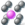

|
|
Main Window — Periodicity Toolbar |
Show information pertaining to structures with periodic boundaries (crystals). These tools are intended for inorganic crystal structures, not protein crystal structures.
| Unit Cell Draw the unit cell boundaries or the lattice vectors, or both, in the Workspace. The choice of what to draw and the appeaance can be set in the Preferences panel. |
|
| Show Atoms Choose options for which atoms are shown in the Workspace and how they are shown, from the button menu. You can show the symmetry-unique atoms of the unit cell (Symmetry Unique Atoms) or all atoms in the unit cell (All Atoms). When displaying all atoms, select Intact Molecules to extend connected fragments beyond the unit cell boundaries. If you only want to see atoms that are inside a single unit cell, you can select Keep Edge Atoms to display the same atom on both sides of the unit cell, if the atom is on a unit cell boundary. |
|
| Calculate Bonds Show the connectivity of the structure, displayed as single bonds. Two atoms are considered connected if the distance between them is smaller than the sum of their covalent radii plus an offset. No account is taken of bond order in the display. Clicking the button or choosing Display Bonds from the button menu displays the connectivity. Choosing Update Bonds updates the connectivity by re-applying the distance criterion. Dynamic Bonds updates the connectivity after each change in the Workspace. To adjust the distance offset, choose Options. |
|
|  | Extents Display replicas of the unit cell along the lattice vectors. Choose Edit from the button menu to set the number of replicas in the positive and negative directions for each lattice vector, in the Edit Extents dialog box. The default is zero replicas. Choose Display Extents from the button menu to display the replicas. You must also choose All Atoms from the Show Atoms button menu to display the replicas. |
| Polyhedrons Display polyhedrons for cations that are surrounded by 4 to 8 anions. An atom is considered as an anion if it is from Group 16 or Group 17 and has a zero or negative formal charge, or if it is N with a negative formal charge. An atom is considered a cation if it is not an anion and has a zero or positive formal charge, and has 4 – 8 bonded neighbors, all of which are anions. The color and opacity can be set in the Preferences panel. |
|
| Properties Calculate unit cell properties (density, volume, and molecular formula) and add these properties to the Project Table. Opens the Project Table panel, and scrolls to these properties. |
|
| Planes Display up to 4 crystal planes, specified by their Miller indices. Opens the Crystal Planes panel, which allows you to set the Miller indices, color, and opacity for each plane. If more than one unit cell is displayed in the Workspace, you can display replicas of each plane by setting a range of displacements from the primary unit cell (Min and Max values), or move the planes parallel to the normal (Translation). |
|